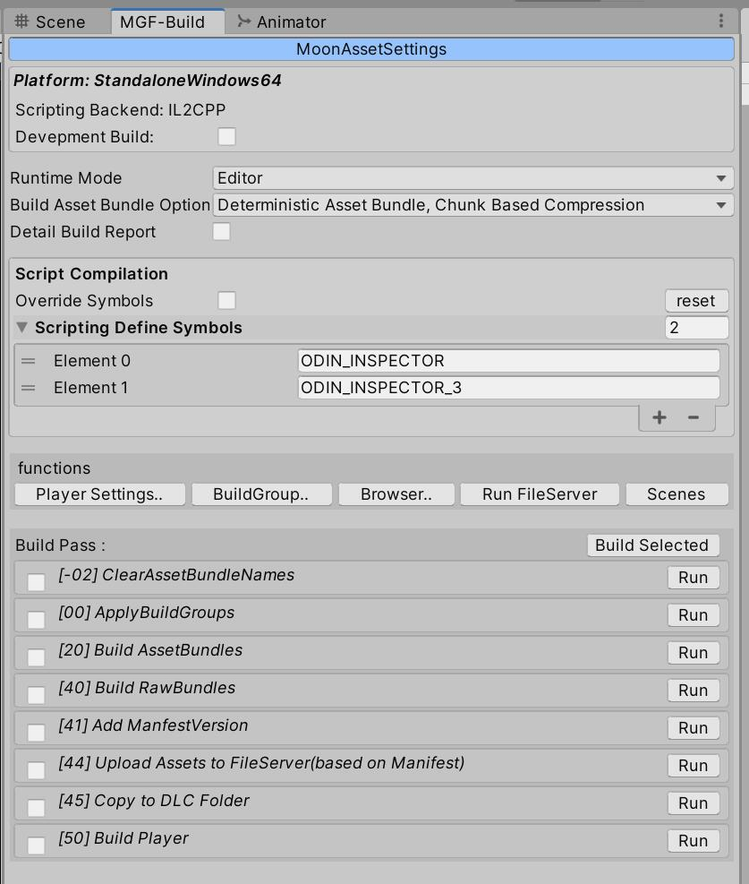
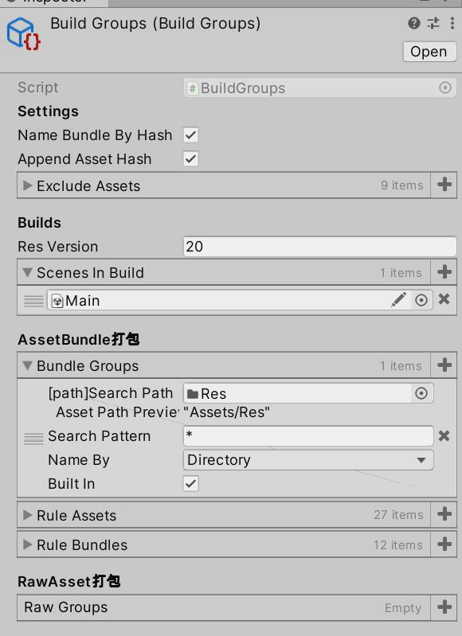
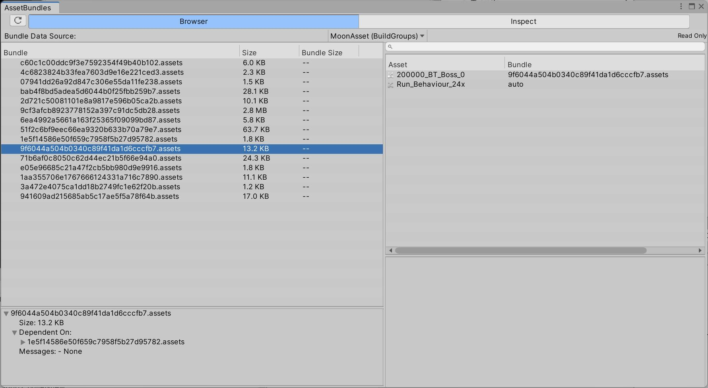

概述
- 自定义Manifest文件，维护资源版本等版本，各种AB资源，以及自定义的非AB资源。
- 不支持变体，SBP决定的
- 资源依赖分析，杜绝资源冗余，
支持U2D SpriteAtlas。不使用AssetBundleName，通过相应接口获取资源引用关系后，自己维护AB引用。 - 资源分组策略，支持基于文件夹，文件等方式快速资源分组。
- 一键打包支持，提供设置面板，反射接口，可以自定义穿插打包逻辑，可快速接入云构建系统。
- 文件名使用文件路径hash；文件流hash(md5)，作为文件内容是否一致的判断
使用ScriptableBuildPipline
Unity于2018推出了ScriptableBuilPipline，以下会简称SBP，将原本c++层的构建管线，移植到了c#层，方便用户扩展构建管线。
改用此管线后，最大的优势是，少了很多manifest文件，减少了IO压力。打包没有用Cache，比老管线时间长一些，有了Cache会快一些。可以打包内置资源，杜绝资源冗余。
另外有一点需要注意，SBP不支持AB变体。
SBP打包方法和内置资源处理逻辑
SBP打包脚本
using System.Collections.Generic;
using UnityEditor;
using UnityEditor.Build.Content;
using UnityEditor.Build.Pipeline;
using UnityEditor.Build.Pipeline.Interfaces;
using UnityEditor.Build.Pipeline.Tasks;
namespace Saro.XAsset.Build
{
public static class SBPBuildAssetBundle
{
public static ReturnCode BuildAssetBundles(
string outputPath,
IList<AssetBundleBuild> assetBundleBuilds,
BuildAssetBundleOptions options,
BuildTarget buildTarget,
out IBundleBuildResults results)
{
var buildContent = new BundleBuildContent(assetBundleBuilds);
var buildParams = new BundleBuildParameters(buildTarget, BuildPipeline.GetBuildTargetGroup(buildTarget), outputPath);
buildParams.ContiguousBundles = true;
buildParams.WriteLinkXML = true;
buildParams.AppendHash = false;
if (options.HasFlag(BuildAssetBundleOptions.ChunkBasedCompression))
buildParams.BundleCompression = UnityEngine.BuildCompression.LZ4;
else if (options.HasFlag(BuildAssetBundleOptions.UncompressedAssetBundle))
buildParams.BundleCompression = UnityEngine.BuildCompression.Uncompressed;
if (options.HasFlag(BuildAssetBundleOptions.DisableWriteTypeTree))
buildParams.ContentBuildFlags |= ContentBuildFlags.DisableWriteTypeTree;
if (!options.HasFlag(BuildAssetBundleOptions.ForceRebuildAssetBundle))
{
// TODO 需要搞CacheServer
//BuildCache
//Set build parameters for connecting to the Cache Server
buildParams.UseCache = true;
//buildParams.CacheServerHost = "buildcache.unitygames.com";
//buildParams.CacheServerPort = 8126;
}
var customTasks = CustomBuildTasks();
ReturnCode exitCode = ContentPipeline.BuildAssetBundles(buildParams, buildContent, out results, customTasks);
return exitCode;
}
public static IList<IBuildTask> CustomBuildTasks()
{
var buildTasks = new List<IBuildTask>();
// Setup
buildTasks.Add(new SwitchToBuildPlatform());
buildTasks.Add(new RebuildSpriteAtlasCache());
// Player Scripts
buildTasks.Add(new BuildPlayerScripts());
//buildTasks.Add(new PostScriptsCallback());
// Dependency
buildTasks.Add(new CalculateSceneDependencyData());
#if UNITY_2019_3_OR_NEWER
buildTasks.Add(new CalculateCustomDependencyData());
#endif
buildTasks.Add(new CalculateAssetDependencyData());
buildTasks.Add(new StripUnusedSpriteSources());
buildTasks.Add(new CreateBuiltInResourcesBundle(
"unitybuiltindata" + XAssetPath.k_AssetExtension,
"unitybuiltinshader" + XAssetPath.k_AssetExtension));
//buildTasks.Add(new PostDependencyCallback());
// Packing
buildTasks.Add(new GenerateBundlePacking());
buildTasks.Add(new UpdateBundleObjectLayout());
buildTasks.Add(new GenerateBundleCommands());
buildTasks.Add(new GenerateSubAssetPathMaps());
buildTasks.Add(new GenerateBundleMaps());
//buildTasks.Add(new PostPackingCallback());
// Writing
buildTasks.Add(new WriteSerializedFiles());
buildTasks.Add(new ArchiveAndCompressBundles());
//buildTasks.Add(new AppendBundleHash());
//buildTasks.Add(new PostWritingCallback());
// Generate manifest files
// TODO: IMPL manifest generation
return buildTasks;
}
}
}打包内置资源
using System;
using System.Collections.Generic;
using System.Linq;
using UnityEditor;
using UnityEditor.Build.Content;
using UnityEditor.Build.Pipeline;
using UnityEditor.Build.Pipeline.Injector;
using UnityEditor.Build.Pipeline.Interfaces;
using UnityEngine;
namespace Saro.XAsset.Build
{
public class CreateBuiltInResourcesBundle : IBuildTask
{
private static readonly GUID k_unity_builtin_extra = new GUID("0000000000000000f000000000000000"); // Resources/unity_builtin_extra
private static readonly GUID k_unity_default_resources = new GUID("0000000000000000e000000000000000"); // Library/unity default resources
[InjectContext(ContextUsage.In, false)]
private IDependencyData m_DependencyData;
[InjectContext(ContextUsage.InOut, true)]
private IBundleExplictObjectLayout m_Layout;
public int Version => 1;
public string ShaderBundleName { get; private set; }
public string DataBundleName { get; private set; }
public CreateBuiltInResourcesBundle(string dataBundleName, string shaderBundleName)
{
DataBundleName = dataBundleName;
ShaderBundleName = shaderBundleName;
}
public ReturnCode Run()
{
HashSet<ObjectIdentifier> buildInObjects = new HashSet<ObjectIdentifier>();
foreach (AssetLoadInfo dependencyInfo in m_DependencyData.AssetInfo.Values)
buildInObjects.UnionWith(dependencyInfo.referencedObjects.Where(x => x.guid == k_unity_builtin_extra));
foreach (SceneDependencyInfo dependencyInfo in m_DependencyData.SceneInfo.Values)
buildInObjects.UnionWith(dependencyInfo.referencedObjects.Where(x => x.guid == k_unity_builtin_extra));
ObjectIdentifier[] usedSet = buildInObjects.ToArray();
Type[] usedTypes = ContentBuildInterface.GetTypeForObjects(usedSet);
if (m_Layout == null)
m_Layout = new BundleExplictObjectLayout();
// 将 Shader 和非 Shader 资源分别记录到两个不同的 Bundle 中
Type shader = typeof(Shader);
for (int i = 0; i < usedTypes.Length; i++)
{
m_Layout.ExplicitObjectLocation.Add(usedSet[i], usedTypes[i] == shader ? ShaderBundleName : DataBundleName);
}
if (m_Layout.ExplicitObjectLocation.Count == 0)
m_Layout = null;
return ReturnCode.Success;
}
}
}资源分组策略
- res一般只放需要动态加载的资源，其他资源直接被prefab/scene引用即可，目的是减少路径序列化，从而减小manifest文件大小
资源依赖分析
SpriteAtlas打包问题
可以直接看 SpriteAtlas与AssetBundle最佳食用方案，讲得非常好了，其他的文章所写的方式，都挺难用的，不需要什么LateBinding啥的。
另外，作为SpriteAtlas的资源图片，还作为Texture来使用，会有双份图片打包，即Atlas图片里一份，原图一份，需要注意。
由于是直接使用散图的，所以，不会引用到SpriteAtlas，打包时需要特殊处理下，将图集里的散图打到同一个ab里。
经测试，上述仅限于legacy打包管线！sbp打包管线冗余，图集，散图都被打进包了！需要参考下Addressable的处理方式！
自定义Manifest
由于我们自己处理了AB依赖，所以需要自己搞一套AB依赖数据结构。同时也支持非AB资源纳入资源清单，例如Wwise音效资源等等，方便直接从资源服直接下载，这也跟资源更新机制实现有关，资源更新以后再说。
打包工作流
打包设置面板
基于接口反射，实现穿插自定义打包方法，提供一个BuiltIn实现，可以仿照着自行实现一个新的。
打包面板
配置面板
AssetBundle浏览器
改造了官方AssetBundleBrowser插件，给本项目使用，移除了编辑功能，添加了打包后AB大小的对比功能
AssetBundleBrowser
资源打包常见问题
1.场景光照异常
可能是场景设置不对，光照信息打AB后被剔除掉了。
2.模型材质异常
例如，没有高光，显示效果异常，和编辑器下有出入。重新收集下变体，保存成svc文件，重新打包Shader AB，观察结果。尽量避免将Standard等复杂Shader丢到IncludeShaders里去，不然变体会爆炸。
3.组件class丢失
il2cpp将class裁剪掉了，需要配置link文件。例如，AnimatorController打包后，真机丢失，动画失效。但AnimatorContorller为Editor下的类，link文件貌似没有效果，解决方案是Resources文件夹下，弄一个预制体，挂载Animator组件，并赋值一个空的Controller。
TODO List
- Asset Graph 自动化分配group。
- sbp打包SpriteAtlas，使用include build时，冗余问题。
- 扫描材质，自动收集变体（通过代码开启的变体，需要特殊处理）。
- 分组也可能会考虑添加GUI编辑支持。估计弄成Addressable那样的。